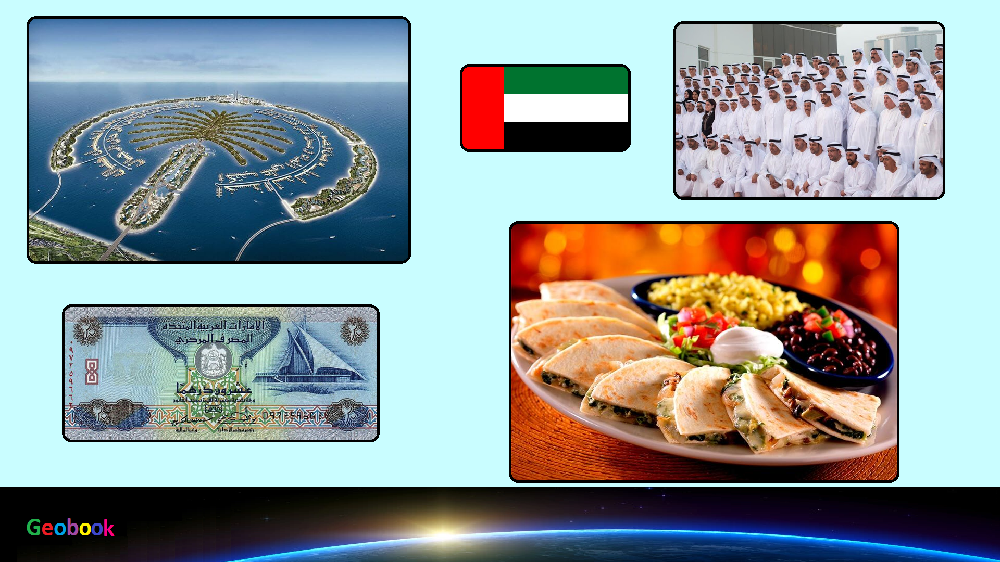

____
Традиционная еда
Камир (khameer) — это булочки из дрожжевого теста. Обычно сладкие с добавлением финикового сиропа. Нечто среднее между привычным нам хлебом и пончиком.
Чибаб (chebab) — это блины, почти не отличаются от наших. Готовятся с добавлением дрожжей, кардамона и шафрана. Название происходит от слова «хеб», переводится как «переворачивать».
Балалит (balaleet) — Это блюдо едят на завтрак. В эмиратской кухне оно считается очень молодым, появилось в пределах 200 лет назад (предположительно), когда иностранные торговцы завезли в эмираты лапшу.
Лукамат (luqaimat) — Аналоги этого блюда распространены от Ирана и Персидского залива до Греции. Блюдо представляет собой жареные мучные шарики в сладком сиропе (называется «диббс»), чем-то напоминает пончики. Естественно, особенность эмиратского варианта – это финиковый сироп.
Ферид (thereed) — Это блюдо похоже на марокканский таджин. Мясо тушится с овощами – картофель, помидоры, кабачок, тыква. Овощи не подбираются специально, а берется то, что есть в холодильнике.
____
